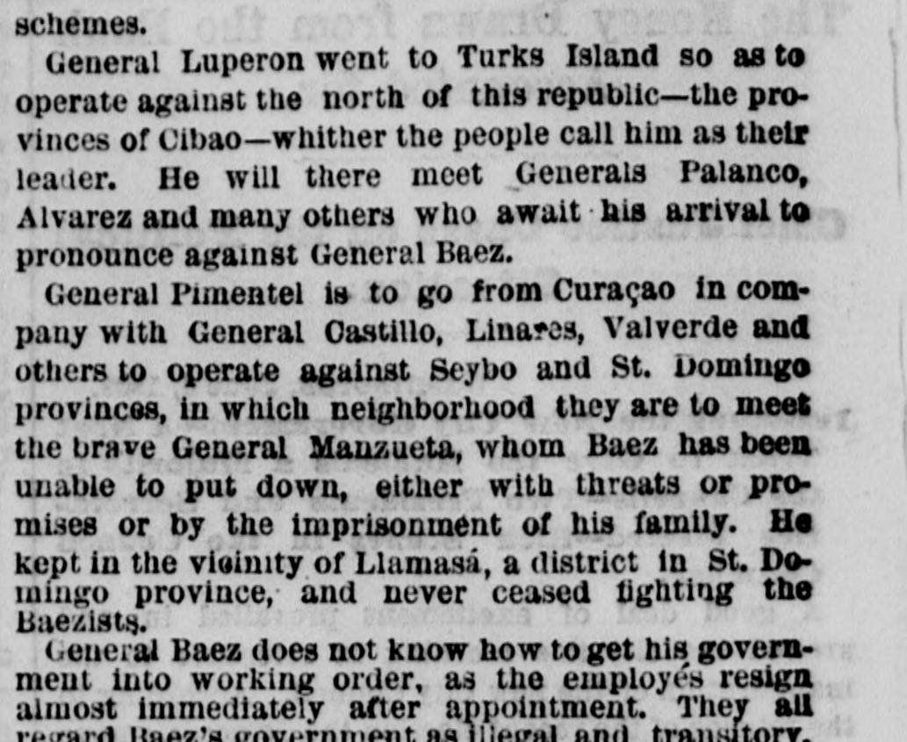

St. Domingo.Santo Domingo.
The New York Herald. New York [N.Y.], June 9, 1868. Page 4. Also published as the New York Daily Herald. Published by James Gordon Bennett. A daily newspaper, 1840–1920.The New York Herald. New York [N.Y.], 9 de junio de 1868. Página 4. También publicado como New York Daily Herald. Publicado por James Gordon Bennett. Periódico diario, 1840–1920. View the originalVer el original

The New York Herald reported that General Báez faces ongoing opposition from General Manzueta in the Seybo and St. Domingo provinces and struggles to maintain a functioning government because employees and appointees quickly resign, viewing his administration as illegal. Additionally, letters from St. Thomas stated that the Caeos captured Carlos Baez while he was allegedly en route to sell Dominican territory south of the Rio Vaqui to Salnave's government in exchange for aid against Cabral.The New York Herald informó que el general Báez afronta la tenaz resistencia del general Manzueta en las provincias de El Seibo y Santo Domingo, debiendo bregar para sostener el aparato administrativo en razón de la pronta renuncia de funcionarios y empleados, quienes consideran ilegítimo su régimen. Por lo demás, epístolas de Santo Tomás aseveraban que los insurrectos cacos apresaron a Carlos Báez cuando presuntamente viajaba a convenir la cesión territorial dominicana al sur del río Yaque al régimen de Salnave a cambio de auxilios bélicos contra Cabral.
FULL TEXT:TEXTO COMPLETO:
The New York Herald June 9, 18689 de junio de 1868
ST. DOMINGO.SANTO DOMINGO.
The Reactionary Forces at Work Against Baez—His Brother Held by the Haytien Cacos—Interesting Review of the Situation—Dominican Speculators on Their Way to the United States.Las fuerzas reaccionarias en acción contra Báez—Su hermano preso de los Cacos haitianos—Interesante revista de la situación—Especuladores dominicanos en camino a los Estados Unidos.
ST. DOMINGO, May 20, 1868.SANTO DOMINGO, 20 de mayo de 1868.
Several Dominican generals recently made the island of St. Thomas a rendezvous. Among them were Cabral, Luperon, Embert, Adon, Pina, Ricardo, Fernandez and Pimentel. They concerted a plan of operations against Baez. The result was that ex-President Cabral sailed for Jacmel May 15 on board the English steamer. He is to take command of the revolutionists along the southern frontier—in San Juan, Neyba, Las Matas, Cercao, Barahona, &c. The chieftains Timsteo and Andres Ogando, Sico Moreno, Damian Castillo and Mariano Rodriguez sent a young man named Abelard Dubreuil through Haytien territory to meet General Cabral. Baez and his partisans, as well as Cazneau, represent that this movement in the south is in favor of President Salnave. This is like what such would report to carry out their own schemes.Varios generales dominicanos hicieron recientemente de la isla de Santo Tomás un punto de reunión. Entre ellos estaban Cabral, Luperón, Embert, Adon, Pina, Ricardo, Fernández y Pimentel. Concertaron un plan de operaciones contra Báez. El resultado fue que el expresidente Cabral zarpó hacia Jacmel el 15 de mayo a bordo del vapor inglés. Ha de asumir el mando de los revolucionarios a lo largo de la frontera sur—en San Juan, Neyba, Las Matas, Cercao, Barahona, etc. Los cabecillas Timsteo y Andrés Ogando, Sico Moreno, Damián Castillo y Mariano Rodríguez enviaron a un joven llamado Abelard Dubreuil a través del territorio haitiano para reunirse con el general Cabral. Báez y sus partidarios, así como Cazneau, representan que este movimiento en el sur es a favor del presidente Salnave. Es como lo que tales reportarían para llevar a cabo sus propios designios.
General Luperon went to Turks Island so as to operate against the north of this republic—the provinces of Cibao—whither the people call him as their leader. He will there meet Generals Palanco, Alvarez and many others who await his arrival to pronounce against General Baez.El general Luperón fue a la isla Turks para operar contra el norte de esta república—las provincias del Cibao—adonde el pueblo lo llama como su líder. Allí se reunirá con los generales Palanco, Álvarez y muchos otros que aguardan su llegada para pronunciarse contra el general Báez.
General Pimentel is to go from Curaçao in company with General Castillo, Linares, Valverde and others to operate against Seybo and St. Domingo provinces, in which neighborhood they are to meet the brave General Manzueta, whom Baez has been unable to put down, either with threats or promises or by the imprisonment of his family. He kept in the vicinity of Llamasá, a district in St. Domingo province, and never ceased fighting the Baezists.El general Pimentel ha de ir desde Curaçao en compañía del general Castillo, Linares, Valverde y otros para operar contra las provincias de Seybo y Santo Domingo, en cuyo vecindario han de reunirse con el valiente general Manzueta, a quien Báez no ha podido someter, ni con amenazas ni con promesas ni con el encarcelamiento de su familia. Se mantuvo en las cercanías de Llamasá, un distrito de la provincia de Santo Domingo, y nunca cesó de combatir a los baecistas.
General Baez does not know how to get his government into working order, as the employes resign almost immediately after appointment. They all regard Baez's government as illegal and transitory, and no one is willing to compromise himself therewith. This is the reason why Señor F. M. Delmonte has not accepted the portfolio that Baez has tendered him, although he has been urged and besought to accept it.El general Báez no sabe cómo poner su gobierno en funcionamiento, pues los empleados renuncian casi inmediatamente después de su nombramiento. Todos consideran el gobierno de Báez ilegal y transitorio, y nadie está dispuesto a comprometerse con él. Esta es la razón por la que el señor F. M. Delmonte no ha aceptado la cartera que Báez le ha ofrecido, aunque se le ha instado y rogado que la acepte.
By letters from St. Thomas we have learned that the Cacos hold Carlos Baez a prisoner. He was on his way to Salnave's government for the purpose of selling that portion of Dominican territory bounded on the south by the Rio Yaqui. This sale was the condition by which Baez agreed with Salnave's Minister, Delorme, for the aid which the latter would give in overthrowing Cabral. The western portion of the island, the Haytien side, has no savannas nor pasture lands to raise cattle. From the Rio Pedernales, whence the dividing line goes, according to the Aranjuez treaty of 1777, to the Rio Yaqui there are magnificent bays, which the Haytiens have always coveted without ever having taken the measures to secure so valuable a portion of our island. To fulfil this part of his engagements Baez has had to mutilate our constitution by dropping the article which points out the limits of the republic as well as the clause which creates the office of Vice President. Baez wants absolute power, and as the constitution of 1865 is very liberal and controlled the President's action while it abolished the death penalty in political cases, he has substituted the constitution of 1854, which makes him master and lord over the Dominicans and imposes capital punishment for political offences. This same substitution he attempted in 1865, when he came to power, but before he could carry it out he was overthrown and had to take refuge in the French Consulate.Por cartas de Santo Tomás hemos sabido que los Cacos tienen prisionero a Carlos Báez. Iba en camino hacia el gobierno de Salnave con el propósito de vender aquella porción del territorio dominicano limitada al sur por el río Yaqui. Esta venta era la condición por la que Báez acordó con el ministro de Salnave, Delorme, la ayuda que este último daría para derrocar a Cabral. La porción occidental de la isla, el lado haitiano, no tiene sabanas ni pastos para criar ganado. Desde el río Pedernales, por donde va la línea divisoria, según el tratado de Aranjuez de 1777, hasta el río Yaqui hay bahías magníficas, que los haitianos siempre han codiciado sin haber tomado jamás las medidas para asegurar tan valiosa porción de nuestra isla. Para cumplir esta parte de sus compromisos, Báez ha tenido que mutilar nuestra constitución suprimiendo el artículo que señala los límites de la república, así como la cláusula que crea el cargo de Vicepresidente. Báez quiere el poder absoluto, y como la constitución de 1865 es muy liberal y controlaba la acción del Presidente mientras abolía la pena de muerte en los casos políticos, la ha sustituido por la constitución de 1854, que lo hace dueño y señor sobre los dominicanos e impone la pena capital por delitos políticos. Esta misma sustitución la intentó en 1865, cuando llegó al poder, pero antes de poder llevarla a cabo fue derrocado y tuvo que refugiarse en el Consulado francés.
Baez has also presented to Congress a bill of his expenses during the revolution that has just brought him to power, but out of decorum they have not made public the amount. The following is the only allusion to it made in the reply of Congress to the President's message:—"As to the detailed accounts of the revolutionary outlays which have been presented by the worthy General Buenaventura Baez, they are entirely approved, as well as the agreement entered into with Señores J. A. Jesurun & Zoons of the neighboring island of Curaçao, which amounts to $37,145 80, which is approved in all its tenor and conditions."Báez ha presentado también al Congreso un estado de sus gastos durante la revolución que acaba de llevarlo al poder, pero por decoro no han hecho pública la cantidad. La única alusión a ello en la respuesta del Congreso al mensaje del Presidente es la siguiente:—«En cuanto a las cuentas detalladas de los desembolsos revolucionarios que ha presentado el digno general Buenaventura Báez, quedan enteramente aprobadas, así como el acuerdo celebrado con los señores J. A. Jesurun & Zoons de la vecina isla de Curaçao, que asciende a $37,145.80, que se aprueba en todo su tenor y condiciones».
So many documents and mortgages will be secured by Baez in the names of Jesurun, Fabens and Cazneau that, even if the peninsula of Samana were sold for ten times its value, the proceeds could not liquidate all the claims that he will have on the treasury of the republic. In connection with this trio of speculators it is very positively asserted here that Jesurun and Fabens are authorized by Baez to raise a loan of $200,000 in the United States, on account of Samana. This money is needed to improve Baez's situation, at least until such time as the bay and peninsula of Samana can be disposed of for good. I do not think these rumors can be well founded, as Jesurun and Fabens left here on April 20 and Baez was inaugurated only on May 2. The Boletin Oficial of that date attacked such a project, and brought severe charges against ex-President Cabral for having sought to alienate Samana. What is certain, however, is, that whatever engagements those gentlemen make in the United States are null and of no validity, as they are not authorized by government legally constituted. Baez has been proclaimed by a faction who overthrew Cabral without electing Baez in a constitutional manner through popular suffrage, as the constitution then in force required. The latter has seated himself in the Presidential chair in spite of the will of the majority, and has imprisoned, exiled and persecuted the most distinguished citizens of the republic.Tantos documentos e hipotecas asegurará Báez a nombre de Jesurun, Fabens y Cazneau que, aun si la península de Samaná se vendiera por diez veces su valor, el producto no podría liquidar todos los reclamos que tendrá contra el tesoro de la república. En relación con este trío de especuladores, se afirma aquí muy positivamente que Jesurun y Fabens están autorizados por Báez para levantar un préstamo de $200,000 en los Estados Unidos, a cuenta de Samaná. Este dinero se necesita para mejorar la situación de Báez, al menos hasta que la bahía y la península de Samaná puedan disponerse definitivamente. No creo que estos rumores puedan estar bien fundados, pues Jesurun y Fabens salieron de aquí el 20 de abril y Báez fue inaugurado apenas el 2 de mayo. El Boletín Oficial de esa fecha atacó tal proyecto y formuló severos cargos contra el expresidente Cabral por haber buscado enajenar a Samaná. Lo cierto, sin embargo, es que cualesquiera compromisos que esos caballeros hagan en los Estados Unidos son nulos y sin validez, pues no están autorizados por un gobierno legalmente constituido. Báez ha sido proclamado por una facción que derrocó a Cabral sin elegir a Báez de manera constitucional mediante el sufragio popular, como lo exigía la constitución entonces vigente. Este se ha sentado en la silla presidencial a pesar de la voluntad de la mayoría, y ha encarcelado, desterrado y perseguido a los ciudadanos más distinguidos de la república.